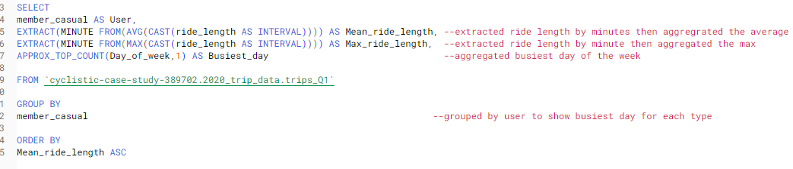

Bikeshare Capstone Project
Google Data Analytics Certificate Course
Problem
Cyclistic, fictional bike sharing company is looking to expand annual memberships. I was tasked with comparing how casual and member riders use the service differently. .
Excel
Created "Ride_length" column by subtracting starting time from ending time and formatted as time 37:30:55.

Created "Day_of_week" column by using WEEKDAY function of starting time column and custom formatted dddd.

Created pivot table showing user type average ride time by day of week.

BigQuery
I wanted to explore user habits by different times of the year. My first query was to find an average ride time, then a max ride time, followed by the busiest day of the week and a count of the rides on that day.
Result

I then performed a join of the entire year counting the numnber of trips by the user type for each day of the week
 ,
, ,,
,,
 ,
, ,
,
 ,
, ,
,
 ,
,
Result
 ,
,
 ,
,

Tableau
I then used the SQL data to create a dashboard on Tableau

Conclusion
Exploring the data allowed me to see that casual riders typically used the service for longer ride times and more on weekends. I then made several recommendations to try and convert more casual riders to members.